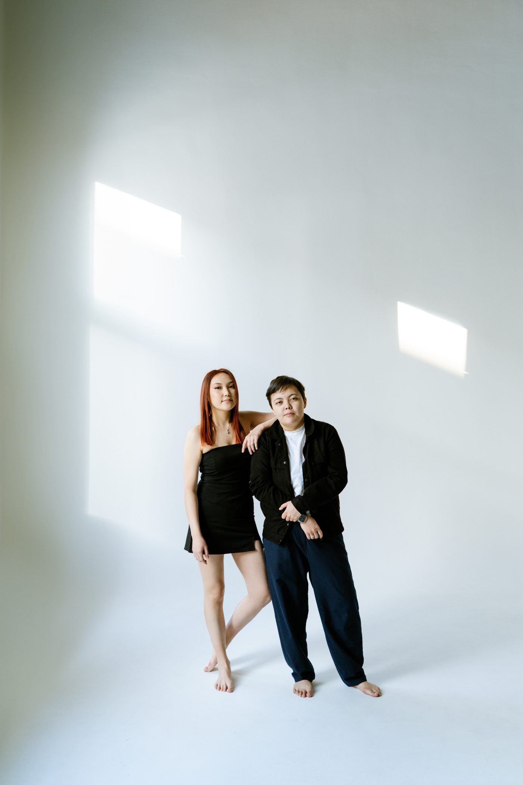

О сериале
Наверное, любовь — это когда две совсем разные дороги, начавшиеся в разных городах, однажды выбирают одну и ту же точку назначения. Из истории Айнур и Сагыныш
Один путь начинался у моря — в Актау. Другой шёл с востока, из Семея. Больше тысячи километров разделяли начало этой истории, пока обе линии не сошлись в одной точке — в Астане, где сериал получил своё название.
Наверное, любовь — это когда две совсем разные дороги, начавшиеся в разных городах, однажды выбирают одну и ту же точку назначения. Из истории Айнур и Сагыныш
История продолжается — новый эпизод выходит каждый день, без даты завершения сезона.
Каспийский берег, соль в воздухе и первая версия истории, ещё не знающая своего продолжения.
За полторы тысячи километров разворачивается вторая сюжетная линия — та, что скоро встретится с первой.
Короткая заметка о том, чем оно особенное.
Короткая заметка о том, чем оно особенное.
Короткая заметка о том, чем оно особенное.
Замечаешь то, что другие пропускают, и умеешь превратить самую обычную мелочь в повод для тепла.
Рядом с тобой даже самый обычный день незаметно превращается в особенный.

Иногда для счастья достаточно оказаться рядом — будь то в Актау, в Семее или на полпути, в Астане.